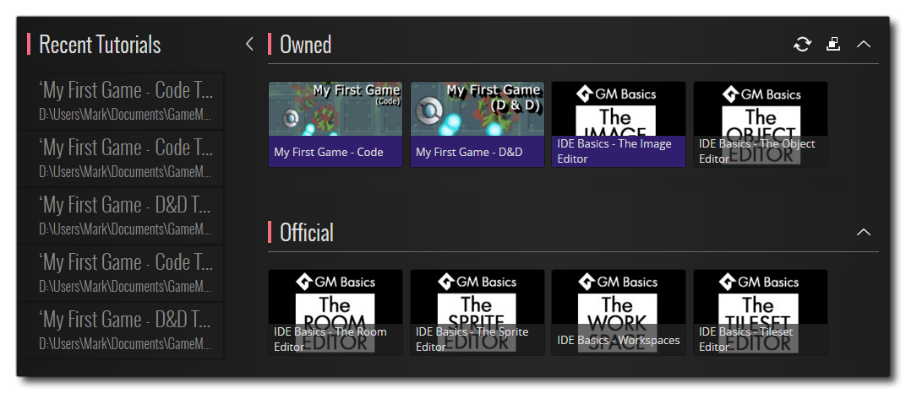

Lorsque vous ouvrez GameMaker Studio 2, il vous sera demandé de vous connecter à votre compte YoYo (ou d'en GameMaker Studio 2 un si vous ne l'avez pas déjà fait - voir ici ). Une fois enregistré et connecté, l' GameMaker Studio 2 principal de GameMaker Studio 2 s'ouvrira sur la page de démarrage: 
En haut, vous trouverez les menus généraux de l'IDE qui sont expliqués dans les sections suivantes du manuel:
Notez qu'il apparaîtra également des options de menu spécifiques au contexte dans la barre de menu supérieure, en fonction de la fenêtre sur laquelle vous vous êtes focalisé actuellement. Par exemple, si la fenêtre de l'arborescence des ressources est active, vous disposez d'un élément de menu supplémentaire pour " Ressources ". Le reste de la page de démarrage est expliqué dans les sections ci-dessous:
Lorsque vous naviguez dans les différentes sections de la page de démarrage, cliquez sur
cela vous ramènera simplement à la page principale.
Sur la gauche de la page de démarrage, vous pouvez voir une liste des projets précédents que vous pouvez ouvrir. Si vous passez la souris dessus, vous pouvez voir le nom et le chemin du projet, et cliquer
La barre supérieure de la page de démarrage contient un certain nombre de liens pour faciliter la navigation. Ils sont énumérés ci-dessous:
- Mon compte - connectez-vous à votre compte YoYo (voir ici pour plus de détails)
- YoYo Games - vous emmène sur le site principal de YoYo Games
- Icônes de médias sociaux - celles-ci vous amènent sur les différents sites de médias sociaux de YoYo Games où vous pouvez vous tenir au courant des nouvelles sur GameMaker Studio 2
La section Projets vous permet de créer, d'ouvrir ou d'importer des projets. Vous pouvez cliquer sur Nouveau pour créer un nouveau projet, Ouvrir pour ouvrir un projet existant ou Importer pour ouvrir un GameMaker: Studio 1.4 GMX fichier de projet ou pour ouvrir un fichier compressé YYZ GameMaker Studio 2 projet GameMaker Studio 2. Open et Import ouvriront l'explorateur de fichiers pour que vous puissiez naviguer jusqu'au fichier de projet dont vous avez besoin.
NOTE: GameMaker Studio 2 n'est pas complètement rétrocompatible avec les GameMaker: Studio 1.4 mais les projets 1.4 importés doivent toujours être exécutés, car des fonctionnalités obsolètes ont été recréées pour vous automatiquement à l'aide de scripts de compatibilité. Pour plus de détails sur les problèmes possibles et les modifications apportées à GML, consultez l'article du centre d'aide GameMaker Studio 2 projet GMS 1.4 vers GameMaker Studio 2, ainsi que la section du manuel sur les fonctions obsolètes.Pour créer un nouveau projet, il vous suffit de cliquer sur le bouton Nouveau pour accéder à l'écran suivant:
GameMaker Studio 2 vous permet de spécifier le type de projet que vous souhaitez créer, et vous pouvez choisir en fonction de vos connaissances ou habitudes de codage. Les options disponibles sont:
- Nouveau projet de glisser-déposer: Cela créera un nouveau projet dans lequel l' éditeur d'objets (et tout autre éditeur autorisant le code) sera configuré pour utiliser l' GameMaker Studio 2 Glisser-déplacer de GameMaker Studio 2. Pour plus d'informations sur Drag and Drop (DnD™) s'il vous plaît voir ici. Notez qu'il ne s'agit pas d'une interface exclusive DnD™ et que vous pouvez passer du code DnD™ au code GML en utilisant le bouton droit de la souris
.
- Nouveau GameMaker langue GameMaker: Ceci créera un projet où la programmation par défaut est faite en utilisant le langage GameMaker (GML). Vous pouvez trouver plus d'informations sur GML ici. Notez qu'il ne s'agit pas d'une interface GML exclusive et que vous pouvez basculer entre le code GML et DnD™ en utilisant le bouton droit de la souris
Peu importe ce que vous sélectionnez, vous serez invité à choisir un emplacement de sauvegarde pour le projet, puis il sera ouvert dans GameMaker Studio 2.
La section d'information de la page d'accueil vous permet de naviguer sur le marché des YoYo Games ainsi que de parcourir et d'ouvrir des tutoriels et des démonstrations de l'équipe YoYo Games pour montrer des aspects spécifiques de GameMaker Studio 2 (voir plus bas).

Tutoriels et démos
Lorsque vous cliquez sur les boutons Didacticiels ou Demos, vous accédez à un écran qui affiche les didacticiels / démos que vous possédez et les didacticiels / démos officiels disponibles en téléchargement: 
Pour télécharger l'un des didacticiels officiels ou des démos, il vous suffit de cliquer sur l'icône correspondant à celle que vous souhaitez utiliser et il sera ajouté à votre section " Possédé " en haut (notez que vous devrez peut-être vous connecter au Marketplace avant peut être fait). Une fois que le tutoriel ou la démo se trouve dans la section "Possédé", vous pouvez passer la souris dessus et soit l'installer, soit voir les informations à partir du Marketplace: 
Une fois qu'un tutoriel ou une démo a été installé, il vous suffit de cliquer dessus pour l'ouvrir et vous serez invité à fournir un emplacement pour enregistrer le projet de tutoriel avant que l'EDI ne s'ouvre pour que vous puissiez commencer. Notez que les didacticiels et les démos installés auront une icône supplémentaire qui peut être utilisé pour désinstaller le projet de votre ordinateur (cela ne supprime pas le tutoriel ou la démo de votre liste "Possédé").
Les sections didacticiels / démos de la page d'accueil comportent également quelques boutons pour vous aider à mieux utiliser et parcourir vos ressources:
| En cliquant dessus, vous actualiserez la liste des projets du Marketplace afin de vérifier si quelque chose a été mis à jour et obtenir les dernières versions. | |
| En cliquant dessus, vous basculerez entre les didacticiels ou les démos que vous possédez et ceux que vous avez installés. |
Notez que tout en travaillant à travers un tutoriel, vous pouvez enregistrer le projet à tout moment et fermer l'IDE ou même changer de projet sans vous soucier de perdre votre place, puisque les tutoriels vont stocker la page et la section que vous travaillez actuellement chaque fois que vous sauvegardez le projet.
Il convient également de noter que vous pouvez également trouver des didacticiels et des démos de tiers sur le Marketplace. Une fois qu'ils ont été achetés et ajoutés à votre compte, ils apparaissent également dans la section "Propriété" de la page appropriée.